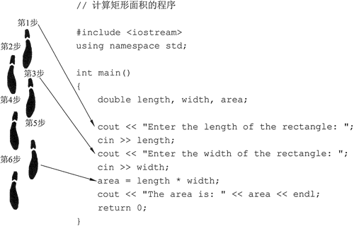
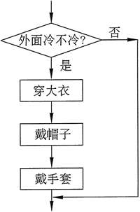
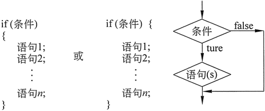
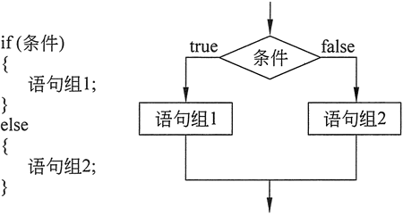
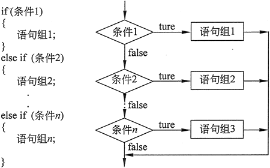
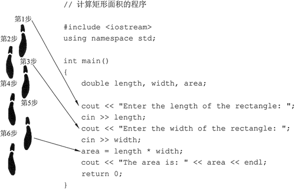
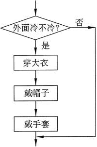
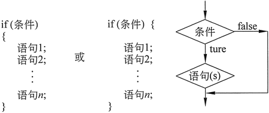
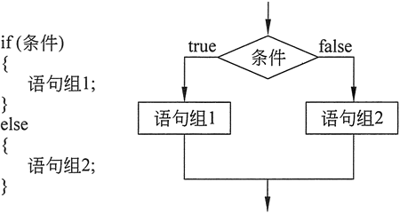
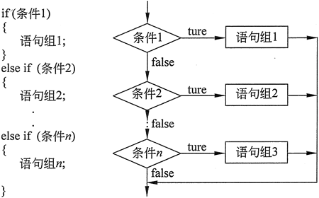

首页 > 编程笔记
C++ if else详解
程序的运行可以看作是一个人在走路时迈出的步伐。要到达目的地，必须从头开始，然后迈开脚步，一步接一步，直到到达目的地。没学本节之前，我们所编写的程序就像有一条要跟着执行的“路径”，如图 1 所示。

图 1 逐步执行的程序
图 1 中的代码类型称为顺序结构，因为这些语句依次执行，一个步骤接着下一个步骤，没有其他方向上的分支。但是，程序通常需要多个执行路径，许多算法需要程序只有在某些情况下才执行一些语句。这可以通过决策结构（分支结构）来实现。
在决策结构的最简单的形式中，仅当存在特定条件时才执行一个动作或一组动作。如果条件不存在，则不执行动作。

图 2 流程图
图 2 中的流程图显示了决策结构的逻辑。菱形符号表示是/否问题或真/假条件。如果问题的答案是肯定的（或者如果条件为真），则程序流程遵循一条路径，这将引导到将要执行的操作。如果问题的答案是否定（或条件是假的），则程序会沿着另一个路径跳过这些动作。
在流程图中，先问“外面冷不冷”？只有外面寒冷时，才会执行“穿大衣”、“戴帽子”和“戴手套”这一系列的动作。如果外面不冷，则会跳过这些动作。这些动作是有条件执行的，因为它们只有当某个条件（外面冷）存在时才执行。
人们每天都会遇到很多这样的条件选择。以下是其他一些例子：
用 C++ 编写决策结构的最常见方法是使用 if 语句。图 3 显示了 if 语句的一般格式，右侧的流程图直观地描绘了其工作原理。

图 3 常见 C++ 决策结构
请注意，if 结构主体的语句包含在一组大括号内，这在 C++ 中称之为块，它让编译器知道哪些语句与 if 相关联。开放大括号必须位于 if 条件之后，并位于主体中的第一个声明之前。当然，在遵循这个要求的原则下，不同的程序员会选择不同的地方来放置它。两个最常见的位置如图 3 所示。
下面的程序 1 演示了 if 语句的用法。用户输入 3 个测试成绩，程序计算其平均分。如果平均分等于 100，则该程序会祝贺用户获得完美的成绩：
例如，程序 1 中如果两个 cout 语句合并成一个语句，则可以写作如下形式：

图 4 if-else 语句结构流程图
与 if 语句一样，if-else 语句也需要检查条件。如果条件为 true，则执行包含一个或多个语句的块。但是，如果条件为 false，则执行不同的语句组。
下面的程序使用 if-else 语句和余数运算符来确定数字是奇数还是偶数：
这些规则的连接方式非常重要。如果片面地考虑问题，则可能会穿错衣服出门，或者 可能会导致穿着一件以上的衣服。例如，如果有风，参考第三条规则就是要穿风衣，但如 果不但有风而且还很寒冷，那该怎么办？是穿风衣呢？还是棉衣？还是两者都穿？基于遵循规则的顺序，第一条规则将决定穿棉衣，而第三条规则不会被参考，所以，人们通常会穿着最合适的衣服出门。
这种类型的决策在编程中也很常见。在 C++ 中，可以通过 if-else if 语句来实现。图 5 显示了该语句的一般格式，右侧的流程图直观地描绘了其工作原理。

图 5 if-else if语句结构流程图
这个结构就像一条 if-else 语句链。一个语句的 else 部分链接到另一个语句的 if 部分。 通过这种方式，if-else 链变成一个长长的语句。下面的程序显示了这样一个例子，用户被要求输入数字测试成绩，程序将显示获得的字母等级。

图 1 逐步执行的程序
图 1 中的代码类型称为顺序结构，因为这些语句依次执行，一个步骤接着下一个步骤，没有其他方向上的分支。但是，程序通常需要多个执行路径，许多算法需要程序只有在某些情况下才执行一些语句。这可以通过决策结构（分支结构）来实现。
在决策结构的最简单的形式中，仅当存在特定条件时才执行一个动作或一组动作。如果条件不存在，则不执行动作。

图 2 流程图
图 2 中的流程图显示了决策结构的逻辑。菱形符号表示是/否问题或真/假条件。如果问题的答案是肯定的（或者如果条件为真），则程序流程遵循一条路径，这将引导到将要执行的操作。如果问题的答案是否定（或条件是假的），则程序会沿着另一个路径跳过这些动作。
在流程图中，先问“外面冷不冷”？只有外面寒冷时，才会执行“穿大衣”、“戴帽子”和“戴手套”这一系列的动作。如果外面不冷，则会跳过这些动作。这些动作是有条件执行的，因为它们只有当某个条件（外面冷）存在时才执行。
人们每天都会遇到很多这样的条件选择。以下是其他一些例子：
- 如果汽车快没油了，就停在加油站准备加油。
- 如果外面在下雨，就赶紧进屋。
- 如果饿了，就找点东西吃。
用 C++ 编写决策结构的最常见方法是使用 if 语句。图 3 显示了 if 语句的一般格式，右侧的流程图直观地描绘了其工作原理。

图 3 常见 C++ 决策结构
请注意，if 结构主体的语句包含在一组大括号内，这在 C++ 中称之为块，它让编译器知道哪些语句与 if 相关联。开放大括号必须位于 if 条件之后，并位于主体中的第一个声明之前。当然，在遵循这个要求的原则下，不同的程序员会选择不同的地方来放置它。两个最常见的位置如图 3 所示。
下面的程序 1 演示了 if 语句的用法。用户输入 3 个测试成绩，程序计算其平均分。如果平均分等于 100，则该程序会祝贺用户获得完美的成绩：
//程序 1 //This program correctly averages 3 test scores. #include <iostream> #include <iomanip> using namespace std; int main() { int scorel, score2, score3; double average; //Get the three test scores cout << "Enter 3 test scores and I will average them: "； cin >> scorel >> score2 >> score3; // Calculate and display the average score average = (scorel + score2 + score3) / 3.0; cout << fixed << showpoint << setprecision(1); cout << "Your average is " << average << endl; // If the average equals 100, congratulate the user if (average == 100) { cout << "Congratulations ! "; cout << "That's a perfect score!\n"; } return 0; }
程序第1次输出结果:
Enter 3 test scores and I will average them: 80 90 70
Your average is 80.0
程序第2次输出结果:
Enter 3 test scores and I will average them: 100 100 100
Your average is 100.0
Congratulations! That's a perfect score!
if (average == 100)
{
cout << "Congratulations!";
cout << "That's a perfect score!\n";
}
需要注意的是，有条件执行的语句块被大括号包围。当两个或多个动作与 if 语句关联时，这是必需的。如果只有一个语句被有条件地执行，则可以省略大括号。例如，程序 1 中如果两个 cout 语句合并成一个语句，则可以写作如下形式：
if (average == 100)
cout << "Congratulations ! That's a perfect score ! \n";
当然，有些教师更喜欢让学生总是使用大括号包围有条件执行的块，即使它只包含一个语句也是如此。if-else
if-else 语句是对 if 语句的扩展。图 4 显示了该语句的一般格式，右侧的流程图直观地描绘了其工作原理。
图 4 if-else 语句结构流程图
与 if 语句一样，if-else 语句也需要检查条件。如果条件为 true，则执行包含一个或多个语句的块。但是，如果条件为 false，则执行不同的语句组。
下面的程序使用 if-else 语句和余数运算符来确定数字是奇数还是偶数：
// This program uses the modulus operator to determine
// if a number is odd or even. If the number is evenly divisible
// by 2, it is an even number. A remainder indicates it is odd.
#include <iostream>
using namespace std;
int main()
{
int number;
cout << "Enter an integer and I will tell you if it is odd or even: ";
cin >> number;
if (number % 2 == 0)
cout << number << " is even.\n";
else
cout << number << " is odd.\n";
return 0;
}
程序输出结果
Enter an integer and I will tell you if it is odd or even: 17
17 is odd.
number%2 不等于 0 时，会显示一条消息，指示号码为奇数。请注意，该程序将只釆用 if-else 语句中的两条路径之一。如果将计算机程序中的语句视为走在路上的脚步，那么 if-else 语句则可以视为道路中的分叉。它导致程序的执行只能按照两条分叉道路中的一条来走。
if-else if
人们常常通过使用一组不同但有相关性的规则来做出某些决定。例如，究竟要穿哪件衣服出门，这要考虑以下规则：
if天气很冷，那就穿一件棉衣；
else, if 天气只是有点凉，那就穿一件夹克；
else, if 有点起风，那就穿一件风衣；
else, if 天气很热，那就不要穿外套。
这些规则的连接方式非常重要。如果片面地考虑问题，则可能会穿错衣服出门，或者 可能会导致穿着一件以上的衣服。例如，如果有风，参考第三条规则就是要穿风衣，但如 果不但有风而且还很寒冷，那该怎么办？是穿风衣呢？还是棉衣？还是两者都穿？基于遵循规则的顺序，第一条规则将决定穿棉衣，而第三条规则不会被参考，所以，人们通常会穿着最合适的衣服出门。
这种类型的决策在编程中也很常见。在 C++ 中，可以通过 if-else if 语句来实现。图 5 显示了该语句的一般格式，右侧的流程图直观地描绘了其工作原理。

图 5 if-else if语句结构流程图
这个结构就像一条 if-else 语句链。一个语句的 else 部分链接到另一个语句的 if 部分。 通过这种方式，if-else 链变成一个长长的语句。下面的程序显示了这样一个例子，用户被要求输入数字测试成绩，程序将显示获得的字母等级。
#include <iostream>
using namespace std;
int main()
{
// Create named constants to hold minimum
// scores required for each letter grade.
const int MIN_A_SCORE = 90,
MIN_B_SCORE = 80,
MIN_C_SCORE = 70,
MIN_D_SCORE = 60,
MIN_POSSIBLE_SCORE = 0;
int testScore; // Holds a numeric test score
char grade; // Holds a letter grade
bool goodScore = true;
// Get the numeric score
cout << "Enter your numeric test score and I will\n";
cout << "tell you the letter grade you earned: ";
cin >> testScore;
// Determine the letter grade
if (testScore >= MIN_A_SCORE)
grade = 'A';
else if (testScore >= MIN_B_SCORE)
grade = 'B';
else if (testScore >= MIN_C_SCORE)
grade = 'C';
else if (testScore >= MIN_D_SCORE)
grade = 'D';
else if (testScore >= MIN_POSSIBLE_SCORE)
grade = 'F';
else
goodScore = false; // The score was below 0
//Display the letter grade
if (goodScore)
cout << "Your grade is " << grade << ".\n";
else
cout << "The score cannot be below zero. \n";
return 0;
}
程序输出结果：
Enter your numeric test score and I will
tell you the letter grade you earned: 88
Your grade is B.
关注公众号「站长严长生」，在手机上阅读所有教程，随时随地都能学习。内含一款搜索神器，免费下载全网书籍和视频。

微信扫码关注公众号